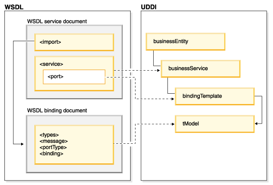

The Universal Description, Discovery, and Integration (UDDI) specification defines a way to publish and discover information about Web services. UDDI has two functions: (1) it is a SOAP-based protocol that defines how UDDI clients communicate with registries, and (2) it is a particular set of globally replicated registries.
Registering a service involves four core data structure types:
For more information on the UDDI data types, refer to the related reference topics at the end of this topic.
Web Services Description Language (WSDL) is an XML-based standard specification for describing Web services. WSDL defines an XML format for describing network services as a set of endpoints that operate on messages that contain either document-oriented or procedure-oriented information.
The WSDL service description can be structured in many ways. However, to assist with publishing and finding WSDL service descriptions in a UDDI registry, WSDL documents consist of two main parts:
When creating Web services with the the Apache Axis run-time environment, the Web services tools create a single WSDL document when generating Web services from Java beans or EJBs. This WSDL document contains both the service interface and implementation documents.
A service interface is described by a WSDL document that contains the types, import, message, portType, and binding elements. A service interface contains the WSDL service definition that will be used to implement one or more services. It is an abstract definition of a Web service, and is used to describe a specific type of service. This document can reference another service interface document using an import element. The Web services tools in this product generate a service interface document that contains only the message and portType elements that are referenced by the binding document that contains only bindings for the portType.
The service implementation document contains the service elements. A service implementation document contains a description of a service that implements a service interface. At least one of the import elements will contain a reference to the WSDL service interface document; however monolithic WSDL such as that created using the Axis and WebSphere run-time environments do not have imports. A service implementation document can contain references to more than one service interface document.
A service provider hosts a Web service and makes it accessible using protocols such as SOAP/HTTP and SOAP/JMS. The Web service is described by the WSDL documents that are stored on the provider's server or in a special repository. The WSDL documents are referenced by UDDI business services (service documents) and tModels (binding documents). These pointers enable discovery of a Web service by a service requestor.
Figure 1. Relationship between UDDI and WSDL.

Figure 1 illustrates the relationship between UDDI and WSDL. The WSDL service element references the WSDL binding element. The URL of the document containing the WSDL binding element is published to the UDDI business registry as a tModel. The URL of the document containing the WSDL service element is published to the UDDI business registry as a businessService and contains information about the bindingTemplate. For more information on UDDI registry data structure types, refer to the related reference section at the end of this document. Note that the import portion of the diagram is optional depending on the run-time environment; monolithic WSDL such as that created using the Axis and WebSphere run-time environments do not have imports.
The service implementation describes an instance of a service. The instance is defined using a WSDL service element. The service element in a service implementation document is used to publish a UDDI businessService. When publishing a WSDL service description, a service interface must be published as a tModel before a service implementation is published as a businessService.
A service implementation is published in a UDDI registry as part of a businessService with one or more bindingTemplate elements. The businessService is published by the service provider. A new businessService is created for a service element that is defined in the service implementation document. A new bindingTemplate element is created within a businessService for each port element that is defined within a service element.
For more information on the relationship between WSDL and UDDI refer to uddi.org/bestpractices.html.